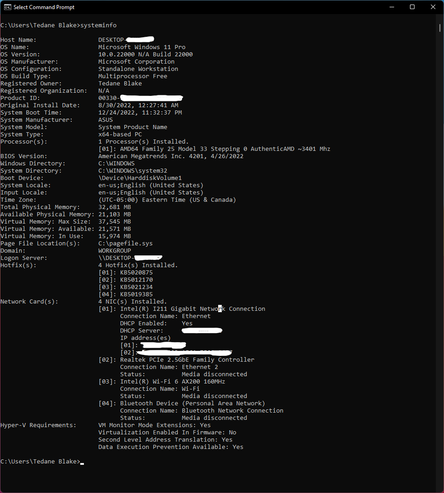

Resources and References
Windows
Getting System Basic Info
To get system info, open a command prompt and type
systeminfo
Screenshot
Getting System Advanced Info
To get more specific system info, you can use WMIC.
For example to get the motherboard info, type:
wmic baseboard get
product,Manufacturer,version,serialnumber
Screenshot

Alternatively, you can open the system information
window by using the Run window. Press
Windows + r, Then type:
msinfo32
You're not limted to just information about the
Motherboard AKA Baseboard. You can get information
on a lot of other components. For example, to get
the informationon the CPU, type:
wmic cpu get
name,Manufacturer,version,serialnumber
Killing Processes
-
Find process
To find the process you want to kill, open a command prompt and type:
tasklist-
Filtering list (Using netstat, /fi)
-
To filter the list, you can use the
/fiflag. For example, to filter the list by the name of the process, type:tasklist /fi "imagename eq chrome.exe" -
To filter the list by the process id, type:
tasklist /fi "pid eq 1234" -
To find processes running on port 8080, type:
netstat -ano | findstr :8080
-
-
Kill process
To kill a process, open a command prompt and type:
taskkill /pid 1234